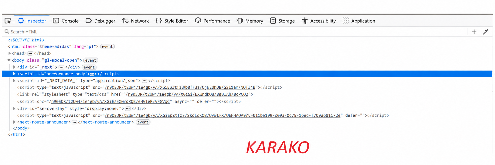

Pasek developera służy do analizy i edycji strony internetowej. Pozwala sprawdzać kod HTML, CSS, JavaScript oraz błędy.
Inspektor Elements znajduje się w DevTools. Służy do podglądu struktury HTML, zmiany CSS oraz sprawdzania elementów strony.
Przejdź do kodu HTML